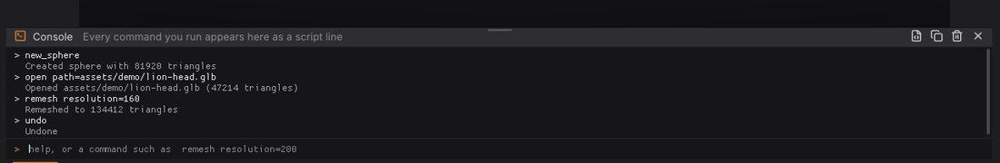
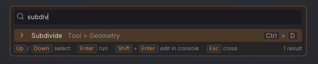

Scripting and automation
Every operation in SculptForge is a named command with parameters. The same commands run from the console inside the app, from script files, from the sculptforge-cli tool on a build farm, from Python, and from AI agents through the Model Context Protocol (MCP). This chapter explains the script language, the console, both command-line programs, the Python module and MCP setup.
The script language#
A script is a list of statements. Each statement is a command name followed by name=value parameters:
new_sphere subdivisions=5
subdivide levels=1
remesh resolution=256; decimate ratio=0.5 # two statements on one line
export_glb path="My Sculpts/bust.glb"The rules:
-
Statements are separated by new lines or by
;. -
#starts a comment that runs to the end of the line (outside quotes). -
Parameters are
name=valuewith no spaces around=. -
trueandfalseare booleans; numbers are numbers; anything else is text. -
Put text in double quotes when it contains spaces,
;,#or", or when it must stay text even though it looks like a number. Inside quotes only\"and\\are escapes, so Windows paths such as"C:\Users\me\head.obj"work as written. -
Colours with a
#must be quoted:set_color color="#d9a07a". - Paths are UTF-8. Relative paths are relative to the current folder of the program running the script.
Scripts stop at the first command that fails.
The console#
Press the backtick key (left of 1), or choose Script > Console, to open the console strip above the bottom shelf. Drag its top edge to resize it.


- Every command you run appears in the console as a script line, whether it came from a button, a shortcut, the command palette or the console itself, followed by its result. Failures show in red with the reason.
-
Type a statement and press Enter to run it. Several statements separated by
;run in order and stop at the first failure. - Tab completes command names, then parameter names. Press Tab again to list the candidates.
- Up and Down walk through the last 200 lines you typed. The history is kept between sessions.
-
help(or?) lists every command;help remeshexplains one command and its parameters. -
clearempties the log.
The console buttons (also in the Script palette):
| Button | What it does |
|---|---|
| Run script file... | Runs a text file of statements (.sfscript or .txt), stopping at the first failure |
| Copy session as script | Puts every command run this session on the clipboard as a script you can save and run again |
| Clear console | Empties the log. The session script is kept |
The command palette#
Press F3 (or Ctrl+Shift+P, or click Search in the title strip) to search every command, brush and setting by name. Enter runs the highlighted entry; Shift+Enter opens it in the console so you can add parameters first. Commands that need parameters always open in the console. With an empty search, the palette lists what you used recently. See The interface.


Commonly used commands#
sculptforge-cli --list (or help in the console) prints every command with all its parameters. These are the ones you will use most:
| Area | Command | Key parameters |
|---|---|---|
| Scene | new_sphere | subdivisions (0 to 8, default 6) |
| Scene | new_plane | resolution (cells per side, default 128) |
| Files | open | path: models, projects, splats, GoZ |
| Files | save_project | path (default: the current project) |
| Files | open_project | path |
| Geometry | subdivide | levels (1 to 4, default 1) |
| Geometry | remesh | resolution (32 to 512, default 200) |
| Geometry | decimate | ratio (default 0.5) or triangles |
| Geometry | qremesh | target (default 5000), adaptive, keep_groups, detect_edges, use_polypaint, symmetry, keep_original |
| SubTools | project_all | distance (default 0.02), mean, blur, geometry, polypaint, source |
| Geometry | mesh_info | |
| Sculpting | stroke | points (required), brush, radius, strength, invert, symmetry |
| Brushes | brush_set_alpha | name (round, square, noise) or path, invert |
| Brushes | brush_ai | prompt (required), provider, model, endpoint |
| Brushes | brush_install | path, code or json |
| Brushes | brush_save | path (required), name |
| Layers | layer_add | name |
| Layers | layer_set_weight | index, weight (both required) |
| Masking | mask_by_cavity | strength, threshold |
| Masking | mask_invert, mask_clear, mask_blur, mask_grow | iterations where it applies |
| Polygroups | polygroup_auto_by_normals | angle (default 30) |
| Visibility | isolate_polygroup, hide_polygroup | group (required) |
| Visibility | show_all, delete_hidden | |
| Transform | transform | translate, rotate, scale, pivot, orient, masked, falloff, symmetry, all (Gizmo 3D) |
| SubTools | subtool_append | type (sphere, cube, plane) or path, name, size |
| SubTools | subtool_select | index or name |
| Polypaint | set_color, paint_fill | color, area (unmasked, masked, all) |
| Polypaint | paint_from_cavity | color, strength, smoothing |
| AI | image_to_3d | path (required), service, model, remesh, resolution |
| AI | text_to_3d | prompt (required), service, model |
| Export | export_glb, export_usd, export_stl, export_ply | path (required); export_stl also height_mm, scale, z_up |
| Export | export_fbx | path (required), lods, ratio, scale |
| Export | export_lods | path (required), levels, ratio |
| Unreal | unreal_send | destination, height_cm, lods, network |
| Splats | splat_to_mesh (Make sculptable) | detail, preset, color, crop, face_guides, stage |
| Splats | face_guides | landmarks, front, up, target |
| Edit | undo, redo |
A few commands exist only inside the app, because they change the view rather than the model: set_material (name= a MatCap such as Sculpt, or Studio) and new_cube.
sculptforge-cli#
sculptforge-cli runs commands without a window: on a server, a render farm node or in a build pipeline. It keeps one scene for the whole run, loads your brush library (and studio brushes), and uses the same ai.json settings as the app.
sculptforge-cli [options]
-c, --command "<script>" Run commands, separated by ';' (can be given several times)
-f, --file <script.txt> Run commands from a file ('-' reads standard input)
--set NAME=VALUE Define a variable; script values written $NAME are replaced
-l, --list List every command and its parameters
--schema Print the commands as LLM tool definitions (JSON)
--mcp Run as an MCP server on standard input and output
-q, --quiet Only print errors
-h, --help Show this helpEach command prints its result on one line (export_glb: Exported out/rock.glb). The exit status is 0 when everything succeeded, 1 for a usage or script syntax error, and 2 when a command failed (the error names the line and the command).
Variables make one script reusable. A value written $NAME (the whole value) is replaced with the --set value, so paths with spaces stay intact:
cat > lods.sfscript <<'EOF'
open path=$in
remesh resolution=256
export_lods path=$out levels=4 ratio=0.5
EOF
for f in rocks/*.obj; do
sculptforge-cli --set in="$f" --set out="lods/$(basename "$f" .obj).glb" -f lods.sfscript
doneMore examples:
# Concept art -> sculptable model -> USDZ (free, via Hugging Face)
sculptforge-cli -c 'image_to_3d path=hero.png; export_usd path=hero.usdz'
# Design a brush (free, no key) and save it for the team
sculptforge-cli -c 'brush_ai prompt="weathered stone edges"; brush_save path=stone.sfbrush'
# Cavity dirt on a sculpt, then a coloured PLY
sculptforge-cli -c 'open path=bust.sfproj; paint_from_cavity color="#3a2a20" strength=0.8; export_ply path=bust.ply'The SculptForge app on the command line#
The desktop app takes a few options too, for renders and start-up scripts:
| Option | What it does |
|---|---|
sculptforge FILE | Opens a model, project, splat capture or image at start-up |
--run "<commands>" | Runs commands at start-up |
--render out.png | Renders the scene to an image and exits |
--turntable N | With --render: N frames around the model (out_000.png ...) |
--size WxH | Render size (default 1024x1024) |
--view YAW,PITCH | Camera angles in degrees (default -30,-15) |
--zoom F | Move the camera F times closer than the framed view |
--wireframe, --polygroups | Render with the wireframe or polygroup colours |
--hide-mesh | Render only the Gaussian splats |
--fullscreen | Start filling the screen (F11 toggles) |
--demo NAME, --record out.mp4 | Play a scripted demo, and record it to a video (needs ffmpeg) |
--ui-test FILE.sfui, --ui-out DIR | Run an interface test script (for developers) |
A review sheet for a model, eight frames around it:
sculptforge model.glb --render review/model.png --turntable 8 --size 1024x1024Rendering needs an OpenGL 3.3 capable GPU or software renderer and a display. On a headless Linux node, run it under a virtual display such as Xvfb (xvfb-run sculptforge ...).
Python#
SculptForge has a Python module, sculptforge, with the same commands plus NumPy access to the mesh. It is included in the VFX Reference Platform builds and the Rez package (see For studios); when building from source, configure CMake with -DSCULPTFORGE_BUILD_PYTHON=ON.
import sculptforge as sf
doc = sf.Document() # loads your brush library, like the app
sf.run(doc, "open", path="/show/troll/troll_base.fbx")
sf.run(doc, "remesh", resolution=320)
sf.run_script(doc, "decimate ratio=0.25; export_lods path=/out/troll.glb levels=4")
verts, tris = doc.vertices, doc.triangles # NumPy (N, 3) float32 and (M, 3) uint32
doc.set_mesh(verts * 1.1, tris) # bring in a mesh from your own tools (clears undo)
print(doc.subtools) # [{'name': ..., 'visible': ..., 'triangles': ...}]
doc.active_subtool = "Helmet" # select by index or name
for name, weight in doc.layers: # sculpt layers (blend shapes)
print(name, weight)
print([c["name"] for c in sf.commands()]) # every command with its parameters| Function or property | What it does |
|---|---|
sf.run(doc, command, **params) | Runs one command and returns its message |
sf.run_script(doc, script) | Runs a script in the syntax above and returns the messages |
sf.commands() | Lists every command with its parameters |
sf.tool_schema() | The commands as LLM tool definitions (JSON) |
doc.vertices, doc.base_vertices, doc.normals, doc.triangles | Mesh arrays of the active SubTool (copies) |
doc.mask, doc.colors, doc.polygroups, doc.hidden | Attribute arrays you can read and assign (None if absent) |
doc.layers, doc.layer_delta(i) | Sculpt layers as (name, weight) and their per-vertex offsets |
doc.subtools, doc.active_subtool | The SubTool list and the active SubTool |
doc.splat_count | Number of loaded Gaussian splats |
Failures raise sculptforge.CommandError. Long operations release the GIL, so you can run them on worker threads.
AI agents (MCP)#
sculptforge-cli --mcp runs SculptForge as an MCP server. An AI agent (Claude Code, Claude Desktop or any MCP client) gets every command as a tool and works on one scene for the session: it can open files, generate models, sculpt strokes, remesh, paint and export.
Claude Code:
claude mcp add sculptforge -- /path/to/sculptforge-cli --mcpClaude Desktop or another client: add a stdio server whose command is the full path to sculptforge-cli and whose argument is --mcp. For Claude Desktop that is an entry in its configuration file like this:
{
"mcpServers": {
"sculptforge": { "command": "/path/to/sculptforge-cli", "args": ["--mcp"] }
}
}Then ask for something like "make a sphere, remesh it at 128 and export it to ~/Desktop/ball.glb". File paths are on your machine. The agent works headless; to see the result, open the exported file in SculptForge.
sculptforge-cli --schema prints the same tool definitions as JSON, for wiring SculptForge into your own agent.
See also#
- The interface: the command palette and Ctrl-hover help
- For studios: Rez, the VFX builds and farm rendering
- Image and text to 3D and Exporting: the commands in context
- Keyboard and mouse reference